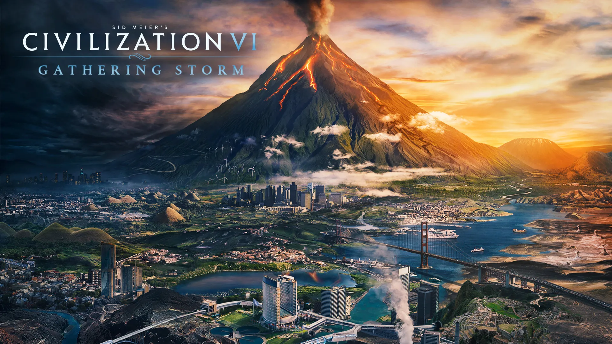
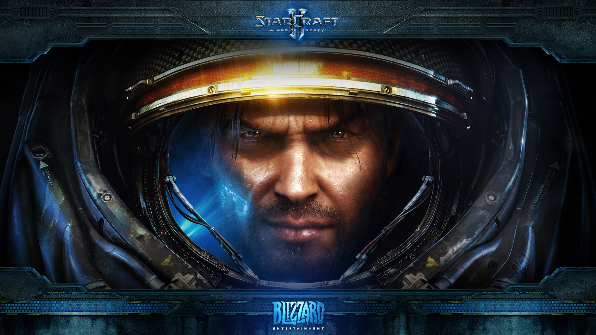
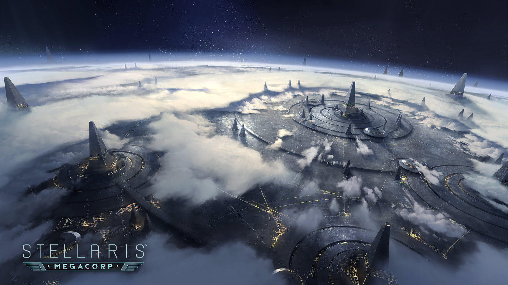

Gojo News
Gojo News
Gojo News
Gojo News
 For nearly three decades, the Civilization series has stood as a beacon in the realm of strategy gaming, offering players a chance to shape the course of human history from the dawn of civilization to the modern era and beyond. Developed by Sid Meier and his team at Firaxis Games, the franchise has become synonymous with grand strategy, intricate diplomacy, and the inexorable march of progress. The Civilization series places players in the shoes of great leaders, guiding a fledgling society through the ages. The objective is clear: to build an empire that stands the test of time. What sets Civilization apart is its turn-based gameplay, allowing players to carefully plan and execute their strategies in a world that evolves dynamically with each passing turn. The hallmark of Civilization is its depth. From the founding of the first city to the exploration of new technologies, players must make critical decisions that will shape the destiny of their civilization. Every choice has consequences, and the game masterfully captures the delicate balance between expansion, diplomacy, culture, science, and military might. Diplomacy is a key element, with leaders of other civilizations driven by their own agendas and personalities. Successful negotiations can lead to alliances and trade agreements, while miscalculations may result in war or diplomatic isolation. The intricate dance of international relations adds a layer of realism and unpredictability, ensuring that no two games play out the same way. The series has seen numerous iterations, each building upon the successes of its predecessors. Civilization II, III, IV, V, and VI have each brought innovations to the table, refining gameplay mechanics, introducing new civilizations, and enhancing the overall visual and audio experience. Civilization VI, the latest installment, introduced the concept of unstacked cities, district specialization, and a more vibrant art style, captivating both longtime fans and newcomers.
 In the vast expanse of the gaming universe, few titles have left as indelible a mark as StarCraft II, the iconic real-time strategy (RTS) game developed by Blizzard Entertainment. Released in 2010 as the long-awaited sequel to the original StarCraft, this game not only met but exceeded the expectations of fans, offering a masterclass in strategic complexity, immersive storytelling, and competitive multiplayer that has endured for over a decade. At its core, StarCraft II invites players to command one of three unique and distinct factions: the human Terrans, the insectoid Zerg, and the technologically advanced Protoss. Each race possesses its own strengths, weaknesses, and distinctive playstyles, adding layers of complexity to the game's strategic depth. The balancing act between resource management, base construction, and military prowess forms the foundation of StarCraft II's captivating gameplay. The single-player campaign is a space opera of epic proportions. Divided into three installments—Wings of Liberty, Heart of the Swarm, and Legacy of the Void—the narrative follows the struggles of iconic characters like Jim Raynor, Sarah Kerrigan, and Artanis as they navigate a galaxy torn by war, betrayal, and ancient cosmic forces. The branching storylines and impactful player choices contribute to an immersive narrative that unfolds across the vast reaches of the Koprulu Sector. However, it's the multiplayer component that has solidified StarCraft II as an esports phenomenon. The game's competitive scene has produced legendary players, fierce rivalries, and unforgettable moments. The meticulous balance between the three races and the high skill ceiling required for success have made StarCraft II a staple in competitive gaming, with events like the World Championship Series (WCS) drawing in viewers from around the globe. Blizzard's commitment to supporting and evolving the game has played a pivotal role in its longevity. Regular patches, balance adjustments, and expansions have kept the gameplay fresh and engaging. The introduction of the free-to-play model in 2017, which made the base game and Wings of Liberty campaign accessible to all players, breathed new life into the StarCraft II community, fostering a new generation of commanders.
 Stellaris, developed by Paradox Interactive, is a grand strategy game that thrusts players into the vastness of space, offering an unparalleled journey of exploration, diplomacy, and interstellar conquest. Since its release in 2016, Stellaris has stood as a beacon in the genre, redefining the expectations for what a space-based strategy game can achieve. At its core, Stellaris is a real-time grand strategy game that unfolds on a galactic scale. Players assume the role of an interstellar empire, guiding their species through the challenges and wonders of the cosmos. From the creation of a species with unique traits and characteristics to the development of an entire star-spanning civilization, Stellaris provides an immersive and customizable experience from the very beginning. One of Stellaris' defining features is its emphasis on exploration. The game begins with a single star system shrouded in the fog of war, and players embark on a quest to uncover the mysteries of the galaxy. Anomalies, ancient relics, and potential allies or adversaries await in the unexplored reaches of space, creating a sense of wonder and discovery that is at the heart of the Stellaris experience. The depth of empire management in Stellaris is staggering. From establishing colonies on habitable planets to managing resource production, technological research, and diplomacy with other empires, players must carefully balance a myriad of factors to ensure the growth and stability of their civilization. The dynamic nature of the galaxy, complete with evolving factions and political landscapes, adds layers of complexity to the strategic decision-making process. Diplomacy plays a crucial role in Stellaris, with the game offering a robust system for interacting with other space-faring civilizations. Alliances, trade agreements, federations, and conflicts contribute to the ever-shifting balance of power in the galaxy. The introduction of federations and galactic communities in later expansions further expanded the diplomatic depth, allowing players to shape the fate of the galaxy through shared policies and resolutions.